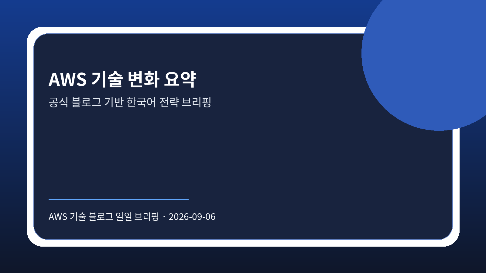

AWS 업데이트와 기업 적용 시사점
AWS source-summary에서 AWS 기술 업데이트와 활용 방안을 공유했습니다. 도입 여부는 기존 시스템 연계, 보안 요구, 운영 역량, 비용 구조를 함께 비교해 판단해야 합니다.
원문 보기공식 출처 기반 · 2026-09-06 07:01:44 KST
신규 저장 문서가 없어 최근 검증된 AWS 출처 요약 문서를 보조 입력으로 사용했습니다. 화면 문장은 한국어로 재구성했고, 제품명과 서비스명은 원문 표기를 유지했습니다.

이번 브리핑은 AWS 공식 RSS에서 확인한 글을 원문 저장과 LLM Wiki 처리 이후 분석한 결과입니다. 기사별 세부 수치나 고객 맥락은 원문 확인이 필요하며, 여기서는 기업 의사결정자가 바로 점검할 적용 관점만 정리했습니다.
AWS source-summary에서 AWS 기술 업데이트와 활용 방안을 공유했습니다. 도입 여부는 기존 시스템 연계, 보안 요구, 운영 역량, 비용 구조를 함께 비교해 판단해야 합니다.
원문 보기AWS source-summary에서 AWS 기술 업데이트와 활용 방안을 공유했습니다. 도입 여부는 기존 시스템 연계, 보안 요구, 운영 역량, 비용 구조를 함께 비교해 판단해야 합니다.
원문 보기AWS source-summary에서 AWS 기술 업데이트와 활용 방안을 공유했습니다. 도입 여부는 기존 시스템 연계, 보안 요구, 운영 역량, 비용 구조를 함께 비교해 판단해야 합니다.
원문 보기AWS source-summary에서 AWS 기술 업데이트와 활용 방안을 공유했습니다. 도입 여부는 기존 시스템 연계, 보안 요구, 운영 역량, 비용 구조를 함께 비교해 판단해야 합니다.
원문 보기AWS source-summary에서 AWS 기술 업데이트와 활용 방안을 공유했습니다. 도입 여부는 기존 시스템 연계, 보안 요구, 운영 역량, 비용 구조를 함께 비교해 판단해야 합니다.
원문 보기
| 기사 | 게시 | 카테고리 |
|---|---|---|
| AWS 업데이트와 기업 적용 시사점 | 2026-09-06 | 확인 필요 |
| AWS 업데이트와 기업 적용 시사점 | 2026-09-06 | 확인 필요 |
| Amazon Bedrock 업데이트와 기업 적용 시사점 | 2026-09-06 | 확인 필요 |
| Amazon Bedrock 업데이트와 기업 적용 시사점 | 2026-09-06 | 확인 필요 |
| Amazon SageMaker 업데이트와 기업 적용 시사점 | 2026-09-06 | 확인 필요 |
AWS의 최근 글은 에이전트, 데이터, 분석, 컴퓨트 영역에서 기능 확장과 적용 사례를 계속 제시하고 있습니다. 기업은 기능 도입 여부보다 권한 경계, 감사 가능성, 비용 구조, 기존 데이터 플랫폼과의 연결성을 먼저 검토해야 합니다.

각 글에서 확인되는 기능이나 사례는 바로 전사 표준으로 확정하기보다, 데이터 반출 여부, IAM 설계, 로그 보존, 비용 귀속, 장애 대응 기준을 검증한 뒤 적용 범위를 정해야 합니다. 원문에서 확인되지 않은 수치나 효과는 확인 필요로 유지합니다.